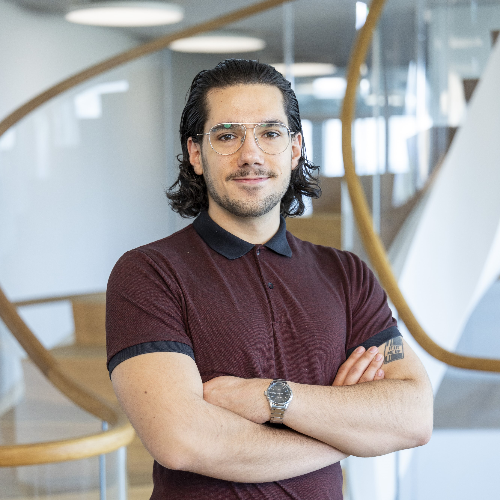

I created this website in late 2024 as a fun side project. This page, the other website content and also myself are currently under construction - please expect flaws and changes :)
Welcome to my personal website! I’m Luca, a biotechnology enthusiast passionate about blending science and technology to solve complex problems. My main interest lies in bioengineering, but stems more from trying to figure out new ways to think about and approach biology, rather than specific interest in a single protein/disease/system.
Feel free to explore this website to learn more about me, view my resume, read my blog, or check out some of my coolest projects! The website is also a fun project of mine to learn about HTML, JS and just how websites work in general, so please take it as a work in progress :)